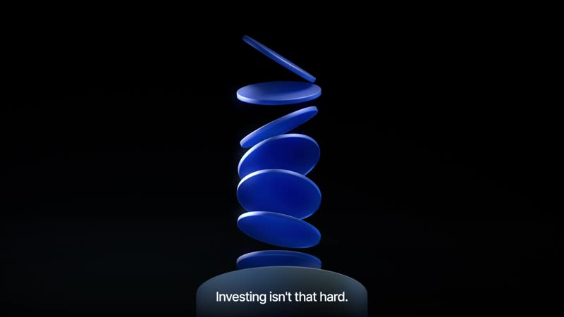
/01
Prime
Product film for a next-generation platform.
WATCH PROJECT ↗cubic-bezier(.16, 1, .3, 1)We create design and motion for SaaS, B2B and D2C brands: product films, brand identities and campaigns. Based in India, working worldwide.
Kulfi Collective, HUMBL, Groww, Signeasy, Wellbeing Nutrition, Postoffice Studios, W by Groww, Skoda, IFB Appliances, JSW Sports, OML, Mc Dowells, HK Vitals, Lego, Spotify, Nutrabay, QWR, Swiggy, EVIG, Asian Paints, Allo Health, Shop Deck, and Armour Heavy.
Different briefs. Different worlds. One obsession: making the important thing impossible to ignore.

Product film for a next-generation platform.
WATCH PROJECT ↗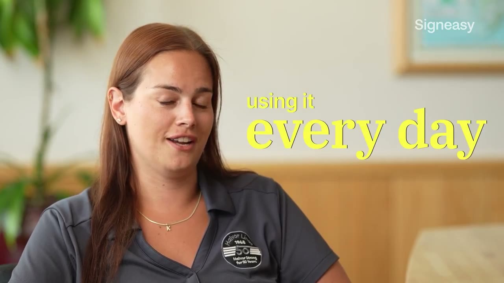
A Signeasy brand story featuring Halvor Lines.
WATCH PROJECT ↗CG product film for a marine wellness range.
WATCH PROJECT ↗The opening statement for W by Groww.
WATCH PROJECT ↗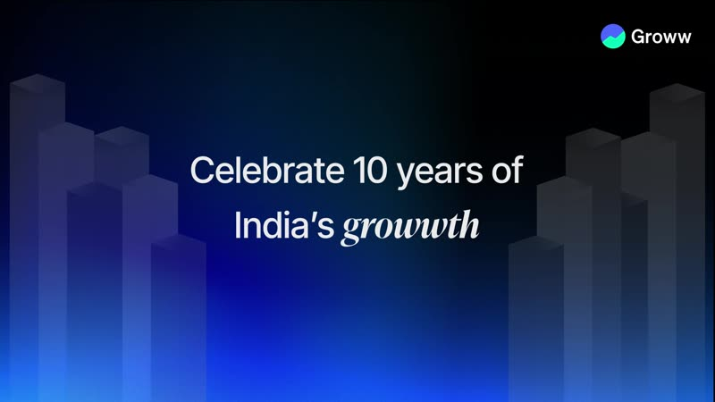
Event design and motion for a flagship conference.
WATCH PROJECT ↗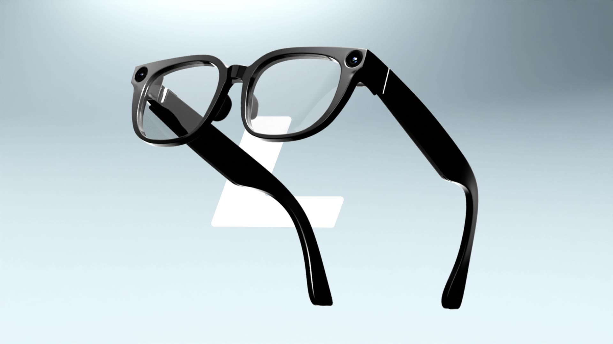
A cinematic product reveal for HUMBL eyewear.
WATCH PROJECT ↗Motion design for a health awareness campaign.
WATCH PROJECT ↗Studio-built tools that give creative work more room to move.
Queue your Blender renders, track live progress and ETA, and get back to making things.
EXPLORE RENQ ↗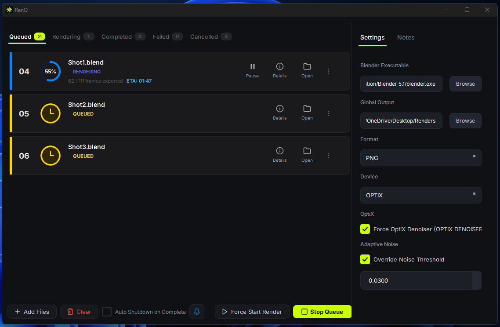
More experiments, launches, films and moving ideas.
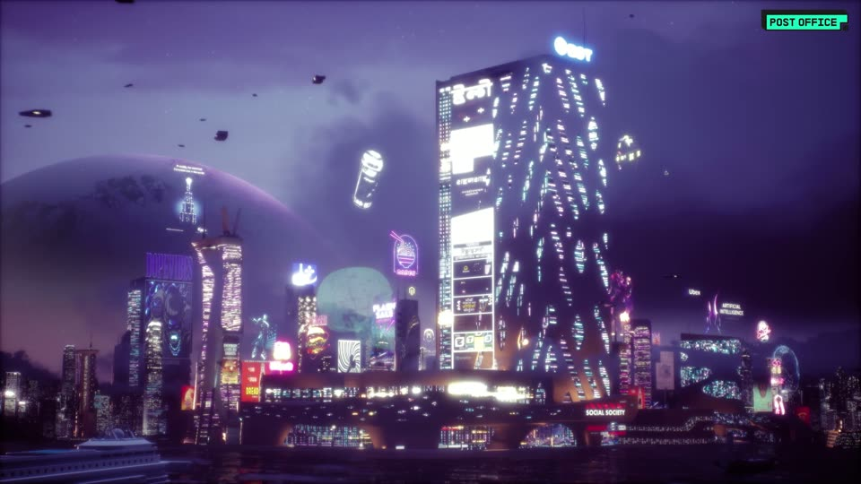
Gully Gang — SpaceshipFilm · 03:1101Build a cinematic world around Gully Gang's spaceship concept. A layered sci-fi city, scale shifts, and atmospheric movement turn the idea into a journey.
Signeasy — Halvor LinesFilm · 02:2002Tell a Signeasy story through the experience of Halvor Lines. Human interview moments and clear graphic transitions keep the people at the center of the film.
YouTube WrapFilm · 02:1303Bring a year of YouTube activity into a vertical recap. Large numbers, creator moments, and quick editorial beats make the scale easy to feel on a phone.
2026 ShowreelShowreel · 01:1804Show the range of Snacpac's motion work in one film. Contrasting projects are cut into a compact sequence built around energy, rhythm, and visual range.
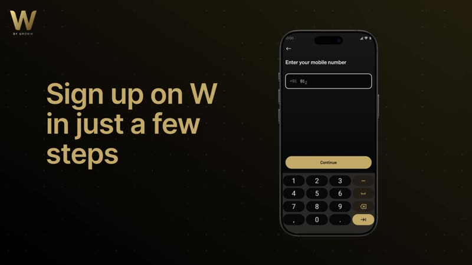
W OnboardingSaaS · 01:1005Introduce W through the first moments of its product experience. Interface transitions guide attention from one action to the next and give onboarding a deliberate pace.
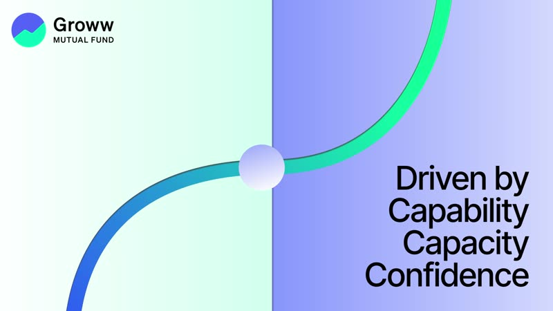
MultiCapSaaS · 01:0806Explain a multi-cap investment idea through campaign motion. Product details are broken into clear visual beats so the concept reads quickly.
Marine CGD2C · 01:0007Give a marine wellness product a focused CG presentation. Lighting, material detail, and controlled camera movement keep the product as the hero.
Master CorpBrand · 01:0008Create a moving expression of the Master Corp identity. Brand elements are arranged into a consistent film language with a confident corporate tone.
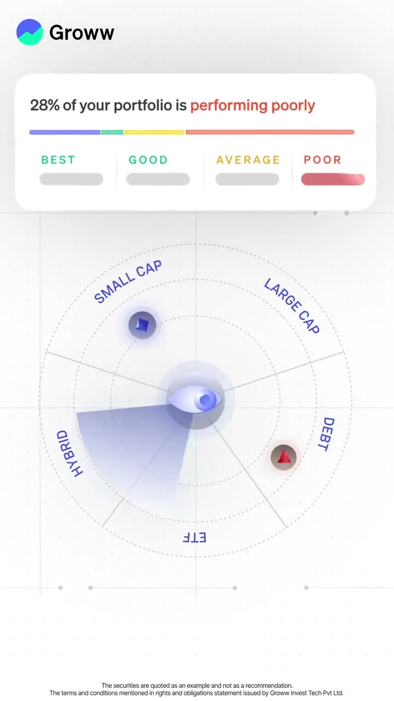
MF PrimeSaaS · 00:5909Introduce MF Prime in a vertical product film. Type, interface details, and a portrait layout make the offering legible on mobile.
PrimeSaaS · 00:5610Present Prime as a next-generation product. A focused product film moves between interface moments and bold statements to establish its character.
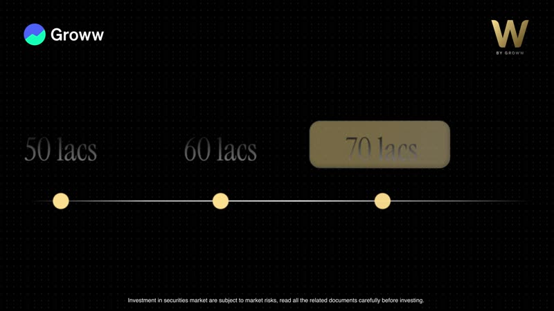
Alpha EdgeSaaS · 00:5511Give Groww's Alpha Edge platform a distinctive brand film. Graphic motion and product cues build a sharp, high-energy visual identity.
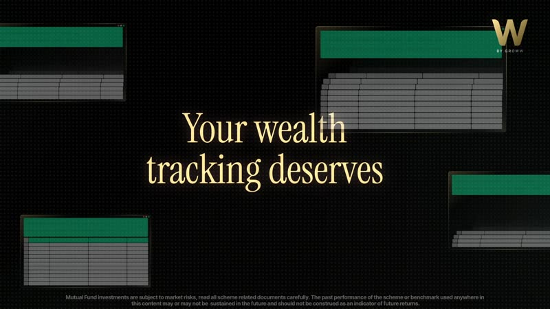
W FeaturesSaaS · 00:5112Show what the W feature suite offers without losing clarity. Each feature gets its own visual beat within one connected motion system.
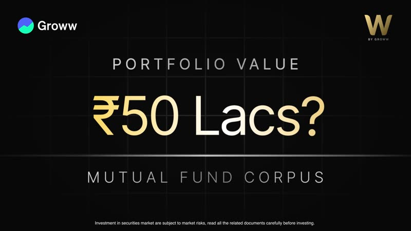
Alpha Edge UACSaaS · 00:4813Adapt Alpha Edge into short acquisition creative. Immediate product cues and concise motion make the message readable at a glance.
W IntroSaaS · 00:4614Create an opening statement for W by Groww. A restrained reveal uses timing and graphic emphasis to establish the brand before the details arrive.
AgendaBrand · 00:4315Give a flagship conference a motion-led visual presence. Event graphics move as a connected system, carrying the identity across moments and formats.
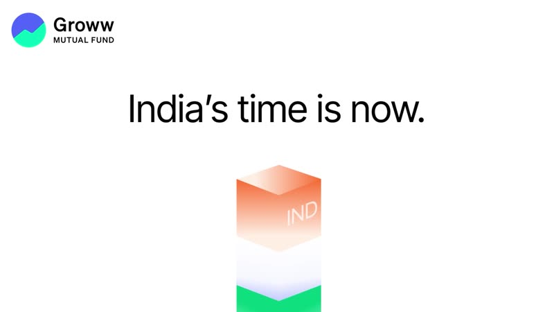
MultiCap HDSaaS · 00:4116Make the multi-cap product easier to introduce on screen. A product-focused film uses paced reveals and clear hierarchy to organize the information.
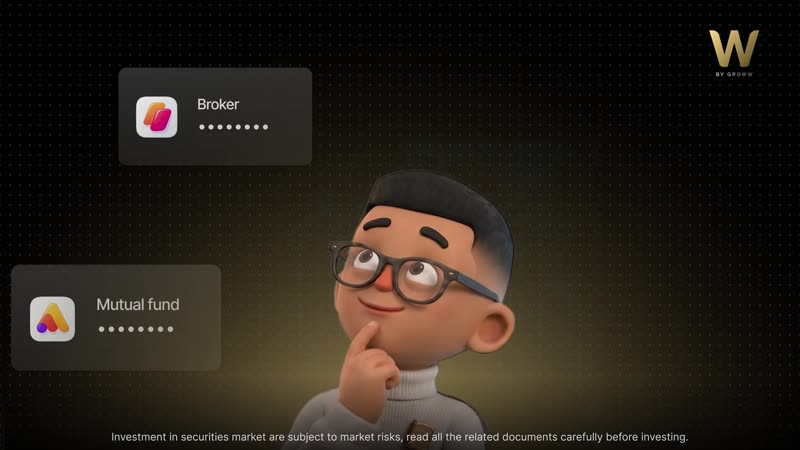
Wealth CircleSaaS · 00:4117Shape a motion identity for Groww's wealth management tier. Measured transitions and a cohesive graphic system give the experience a distinct tone.
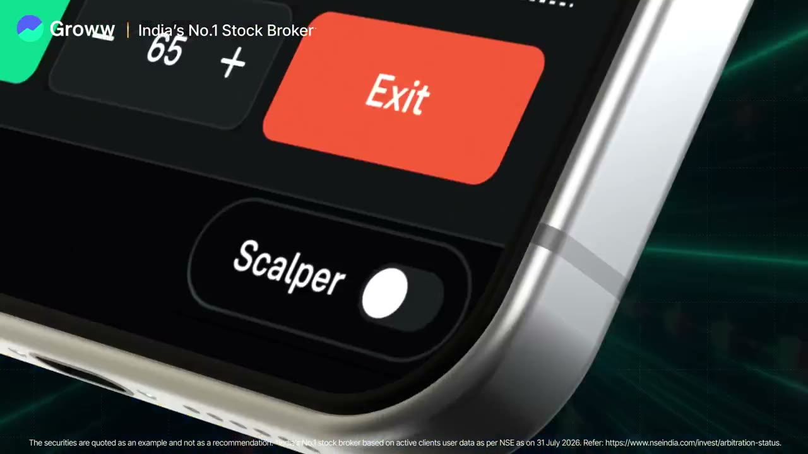
Scalper ZoneSaaS · 00:3918Introduce Groww's Scalper Zone and its trading interface. Close product views, market graphics, and fast transitions convey the feature's pace.
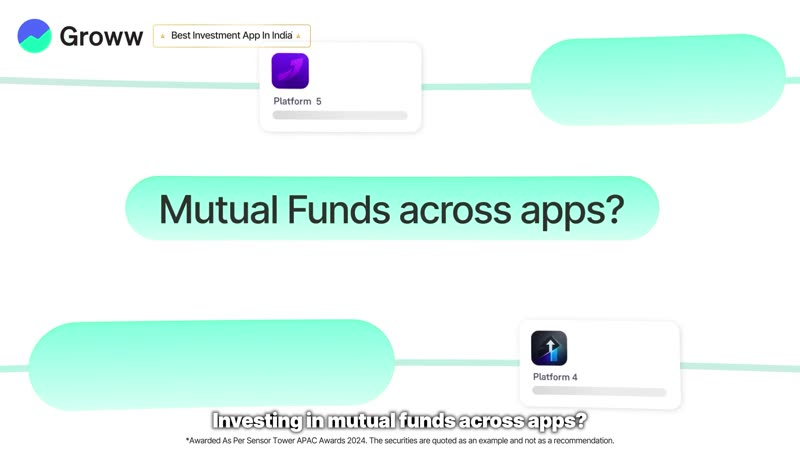
NTGBrand · 00:3819Translate NTG's brand into a moving film. A consistent motion vocabulary ties the identity and its on-screen moments together.
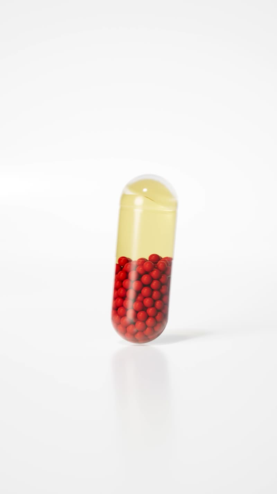
Slow ScienceD2C · 00:3220Give a science-backed brand a more approachable visual story. A slower rhythm and clear imagery let the idea unfold without crowding the message.
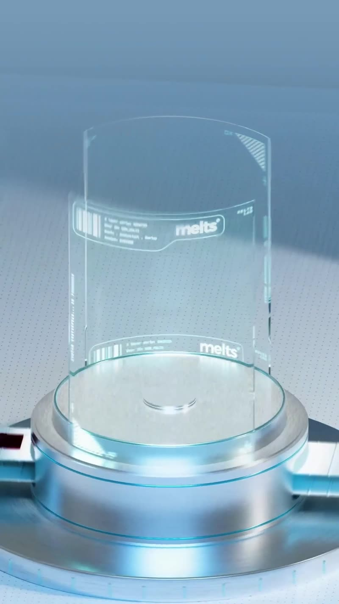
Sleep MeltsD2C · 00:3021Introduce a sleep wellness product through a calming brand film. Soft pacing and product-focused imagery create a gentle visual mood.
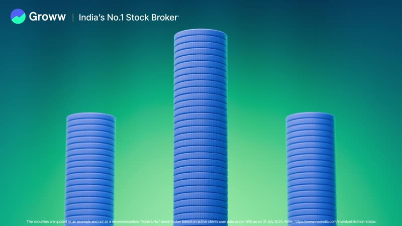
IPO 3DSaaS · 00:3022Create a 3D-led film for an IPO product launch. Dimensional motion gives the announcement scale while keeping its key message clear.
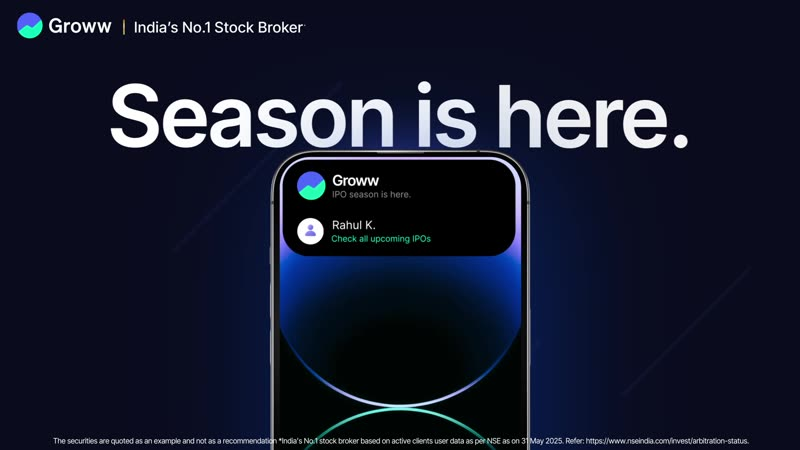
IPO MeeshoSaaS · 00:2923Announce the Meesho IPO within the Groww experience. Brand and interface elements move together in a concise launch sequence.
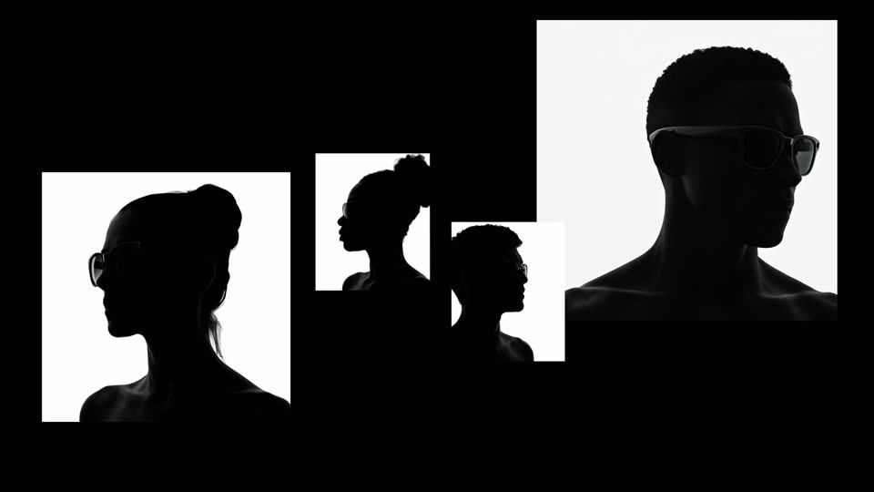
HUMBLFilm · 00:2824Tease the HUMBL eyewear world before the full reveal. High-contrast silhouettes and quick cuts build recognition while holding back detail.
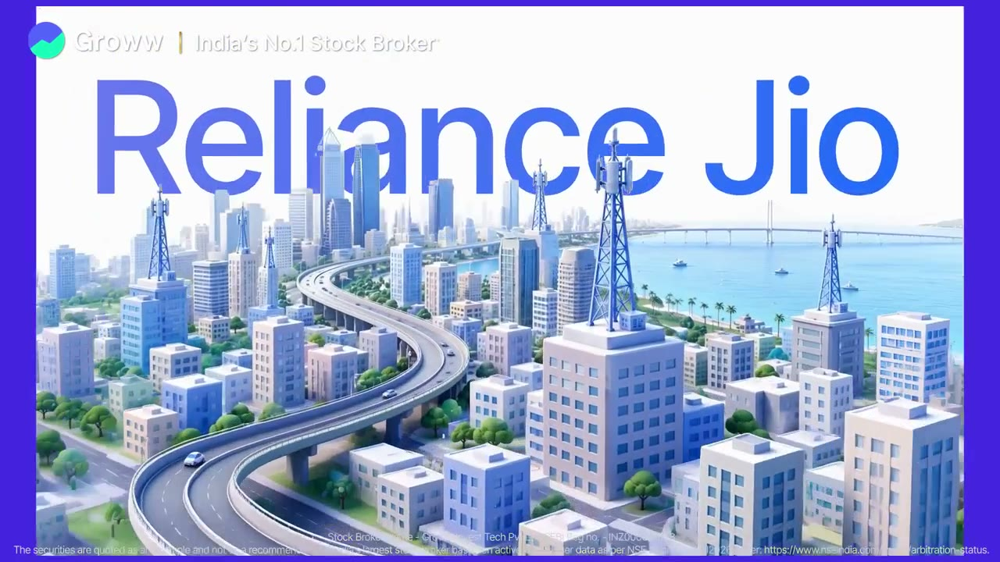
Jio IPOSaaS · 00:2525Present the Reliance Jio IPO in a Groww film. A broad opening image gives way to product screens and a clear application story.
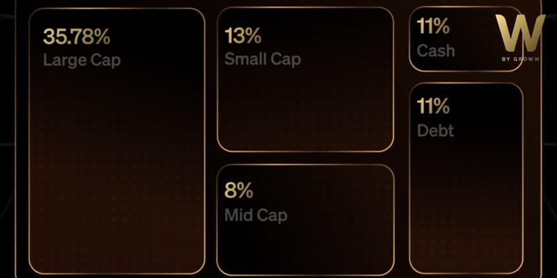
W Insight StallSaaS · 00:2426Bring W's visual identity into its Insight event stall. Spatial graphics and screen motion extend the brand into an immersive setting.
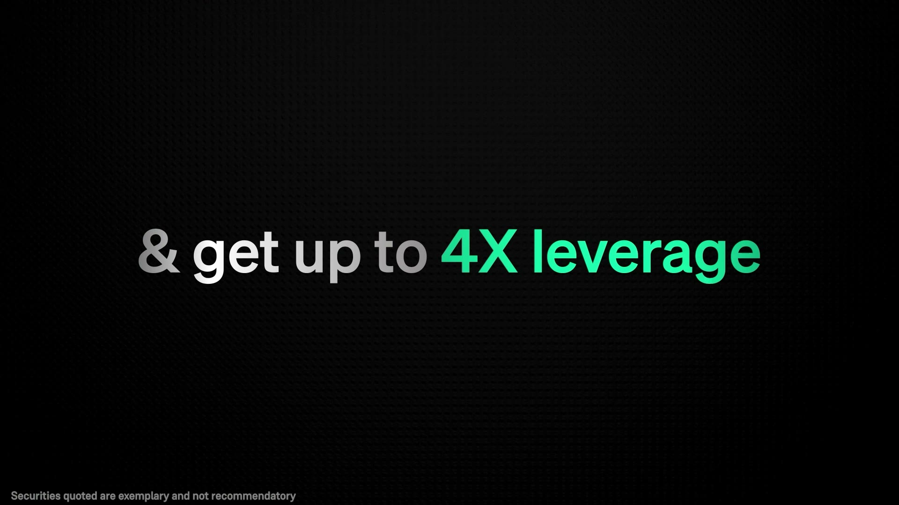
MTFBrand · 00:2327Give MTF a dark, high-contrast brand expression. Controlled reveals and graphic contrast create a distinct tone for the film.
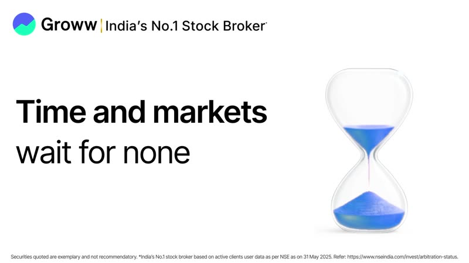
Signed UpSaaS · 00:2328Mark a user's sign-up moment with purposeful motion. A short onboarding sequence makes completion feel clear and satisfying.
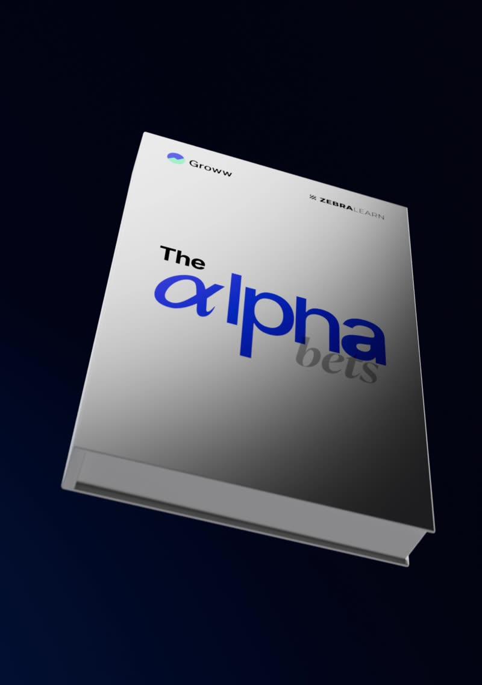
Book LaunchSaaS · 00:2029Launch The Alpha Bets for Groww and ZebraLearn. Book-led imagery and paced reveals give the collaboration a clear opening moment.
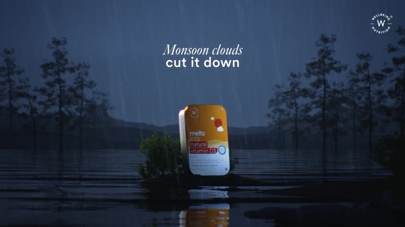
D3 WideD2C · 00:1630Present a vitamin D3 product in a wide-screen format. A spacious composition gives the product room while motion directs the eye to its key details.
HUMBL — Product RevealFilm · 00:1331Reveal HUMBL eyewear as the focus of a cinematic product film. Close-up details, light, and clean transitions put the form of the glasses first.
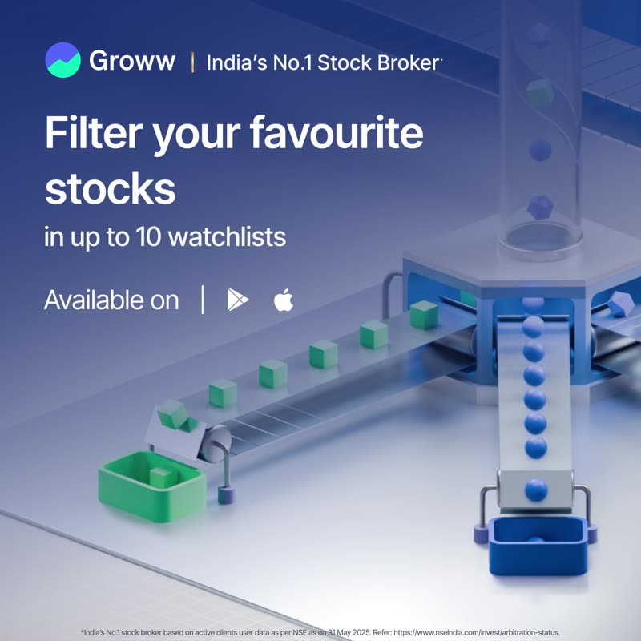
WatchlistSaaS · 00:1232Make a product watchlist feel easy to scan and follow. Interface motion connects changes in data without distracting from the information.
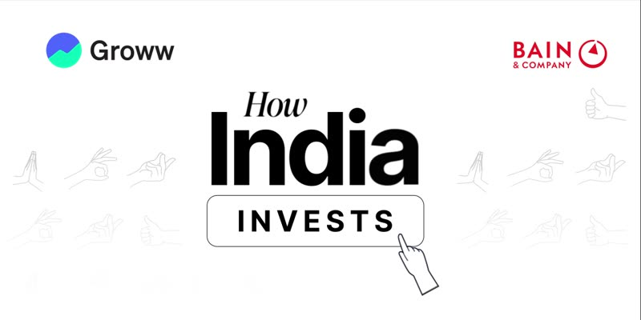
TVSaaS · 00:0633Adapt a financial product launch for a broadcast frame. Large type and direct motion make the message readable at a distance.
IIFLSaaS · 00:0634Build a motion expression for IIFL's financial brand. Brand elements move as one system to keep the identity consistent on screen.
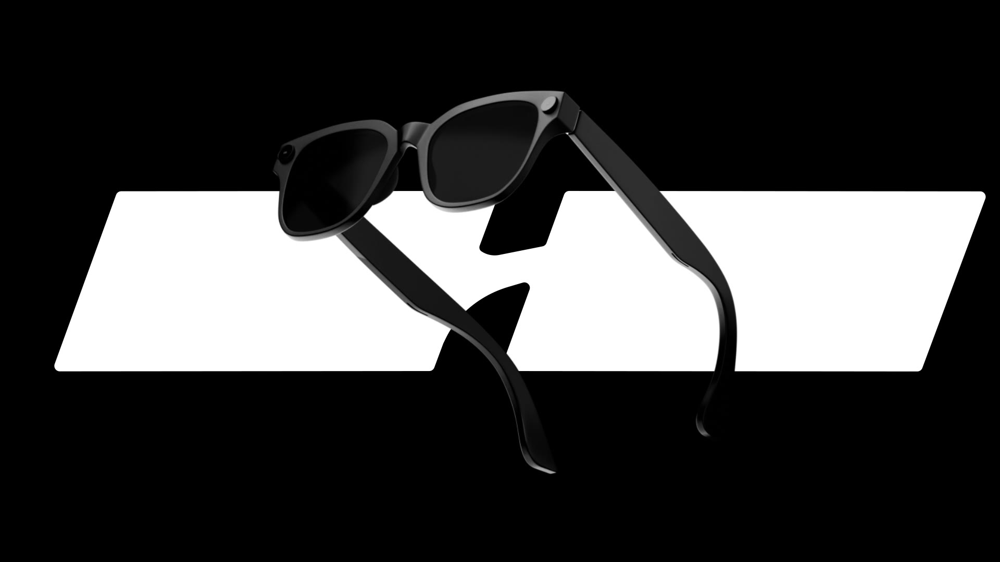
HUMBL — Product SpotFilm · 00:0535Show HUMBL eyewear in a brief product spot. A few precise shots and stark contrast put the glasses in focus fast.
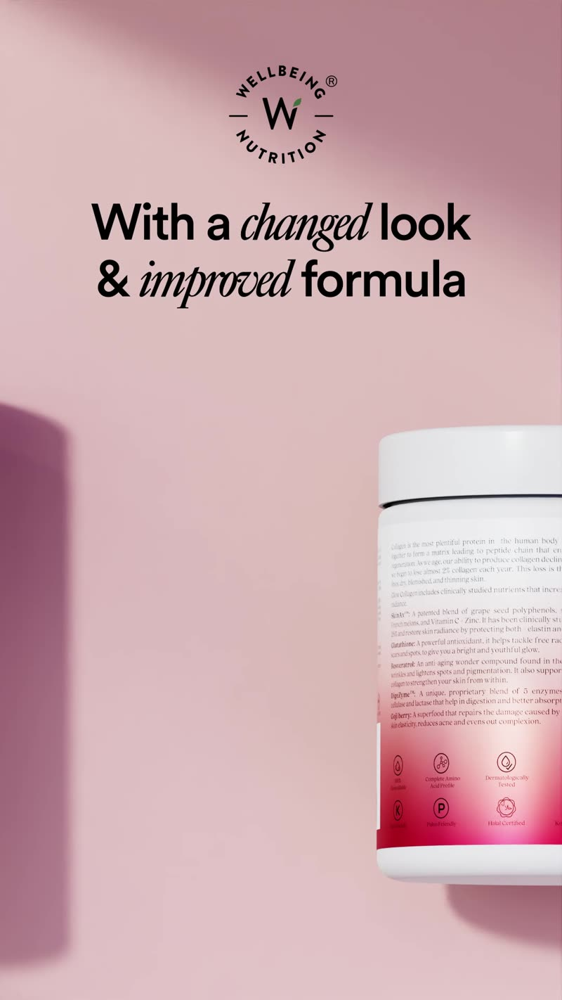
Glow CollagenD2C · 00:0536Introduce a collagen product through a short wellness film. Product imagery and quick, clean transitions make the launch feel immediate.
PCOSD2C · 00:0437Support a PCOS awareness message with clear motion design. Concise visual storytelling gives the topic space and makes the message easier to follow.
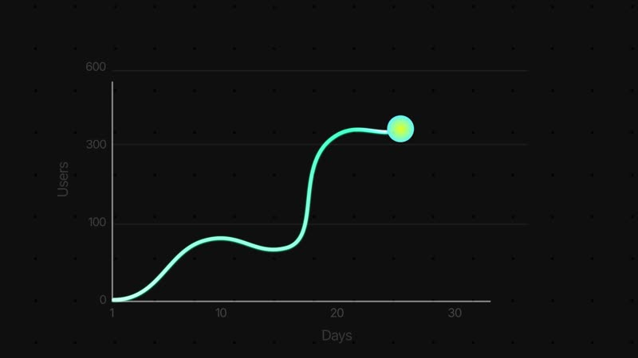
Data in MotionSaaS · 00:0338Make financial dashboard data easier to read in motion. Graph changes are sequenced so the viewer can follow the information as it develops.
No projects match that search.
Snacpac is a small motion and design studio helping SaaS, B2B and D2C brands make complex ideas clear, engaging and easy to understand. From product launches to campaigns, we make visuals that move with purpose.
LET'S MAKE SOMETHING ↗Explore how we help software companies, business brands and consumer products communicate through design and animation.
Motion design helps SaaS brands show how a product works and why it matters. Snacpac creates product films, interface animation and launch visuals that turn complex features into a clear story.
Explore services ↗Snacpac helps B2B brands explain complex ideas through brand identity, visual systems and motion. We connect design with product stories, corporate films and campaign assets.
Explore services ↗Snacpac creates product animation, 3D visuals and campaign design for D2C brands. From wellness products to eyewear, we use lighting, materials and motion to give products a distinctive visual presence.
Explore services ↗AVAILABLE FOR THE RIGHT PROJECT